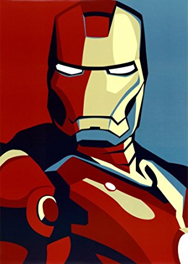
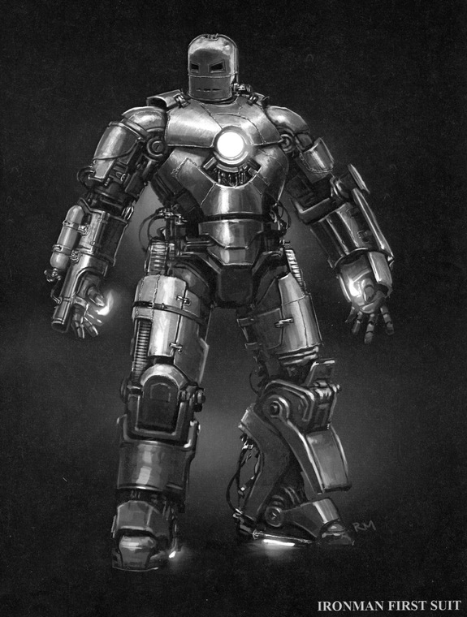
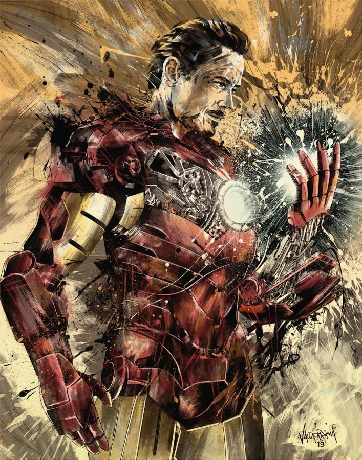

Biography |
|
|---|---|
|
 |
History and Background |
|
| Anthony Stark, Son of Howard Stark, enrolled in an engineering program at the Massachusetts Institute of Technology (MIT) at 15. At 21, he inherited his Father's Business, Stark Industries, and turned it into a multi-billion dollar company who's main contracts were weapons for the US Government. Stark went to Vietnam to show a field test of one of his weapons, and tripped a booby trap, causing a piece of shrapnel to get lodged into his chest. He was then taken captive by communist leader Wong-Chu, and was told within a week the shrapnel would pierce his heart and kill him. Stark was offered his life in return for him building a weapon for Wong-Chu, and even though it was a lie he accepted. He was put into a lab with another captive named Ho Yinsen, who acted as his assistant. Stark designed and fabricated a primitive suit of armor he could use to escape with heavy weaponry and armor. Upon the suit in the process of booting up, Wong-Chu investigated as he believed something was wrong, and Ho Yinsen sacrificed his life in order to buy Stark enough time to come through with an epic escape, and he then went on to avenge Yinsen. He then traveled into the jungle and came across James Rhodes, a US Marines Pilot who had crashed his helicopter in the jungle and was attempting to make it flyable once more. They then recharged Stark's suit with the heli battery and found the base of which the rocket was fired that shot down Rhodes. They then stole an enemy helicopter and destroyed the base, finding the nearest american base and landing there. Back home, Stark created a new ark reactor that was lighter and created more energy. He then made a better suit and originally planned to release it to the public but later decided it was too dangerous and chose to keep it to himself. |
 |
Special Abilities |
|
| Super Powers Stark has the injected Extremis Virus within him, and nanotubes powered by his arc reactor. He also has psi-shields which shield his mind from telepaths. His armor has become Fused to his body through the Extremis, and he has direct cyberpathic control over all the coms and scanning devices in his helmet. Extremis also gives him superhuman reflexes, and gives him the ability to biologically heal himself, as well as his ability to repair the armor within him. He can also remotely control external electronic devices like cellphones, satellites, and computers. He also can control what his armor forms around him as his armor is made up of nanobots that can move and transform into whatever Stark wishes. Abilities Stark is a Mechanical Engineering prodigy separate from his suit, which means he is classed as above a genius, and he can and constantly creates new tech and improves it. He is one of the smartest people on earth, and he is capable of using his suit in effective, uncommon of ways to escape enemies and traps. He is also capable of fixing almost all machinery, if not all. Stark is also an expert businessman, meaning he can use his relations and influence in the business world to get what he needs. He has also created multiple, multi-million dollar companies from basically nothing. He even strides to ensure all of his business is done legally and for good, even if it means losing profits.Stark is an expert at creating strategies and new plans almost instantly. He is also skilled in unarmed combat (trained by Captain America), and is also great at melee while in his armor, as punches with his suit are as strong as a steel ball travelling at 3,500 ft./sec. Stark also possesses tremendous willpower, battling alcoholism and recovering twice. |
 |
Gadgets |
|
| Iron Man's Primary Gadget/Equipment/Form of Transportation is his Armor. The armor uses a set of machines to put on, which is quite lengthy, although it has been shortened and made more compact by using a suitcase. It has also been shown that he can hold the armor within himself, shortening the suit up time to seconds. The suit also possesses superhuman strength, able to lift 100 tons, and more when powered accordingly. The suit gives him Superhuman Speed too, even when travelling short distances with higher movement and reaction speeds. The armor also gives him the ability to fly, reaching speeds above Mach 8, but has been seen reaching orbital velocity (5 miles per second), and speeds that can outrun black holes too. The jet boots give him the power to lift a load of about 500 tons. The armor is powered by a combination of sources including solar converters, electrical batteries, an on-board generator using beta particle absorption, and the arc reactor itself. The armor can also absorb kinetic, heat, and energy from the planet itself and convert it to electricity. The armor is capable of operating in a vacuum or underwater, with life support systems and radiation shielding as well. It can also create magnetic fields and move metal objects. The armor includes an onboard computer system that aids Stark in strategies, background info on enemies, surroundings, suit status, and prevention of enemy target-lock. The suit has radar, lidar, night vision, and physiological/medical scans for himself and others. He also is capable of scanning all environments for atmospheric content or life forms. The systems can also be overridden to allow him to have greatly increased strength, durability, and repulsor intensity, with the chance of a complete system failure able to occur. The armor is made of a crystallized iron enhanced by magnetic fields over materials like titanium creating an ultra pliable and strong material with great protection. The suit can withstand high caliber bullets, rockets, missiles, torpedoes, high powered lasers, etc. taking little to no damage. Some armors are even resistant to electricity, fire, heavy impacts, energy blasts, zero kelvin temperatures, the heat of the sun, unlimited kinetic and thermal energy, and most forms of radiation. It even has the ability to withstand a nuclear explosion at ground zero. The suit even has energy shielding that can reflect attacks and stay mobile. At just 2% power it can withstand a nuclear explosion. Iron man has a multitude of weapons, ranging from repulsor rays, unibeams, lasers, pulse bolts, energy blades, pulse barrages, and smart missiles to tri-beam, multi-beam, pentabeam, omnibeam, hyper-velocity impacts, and even plasma discharge. |
 |
Likeability |
|
| Tony Stark, or Iron Man, is a superhero that is not always seen as likeable to every person. This is because of his cold, calculating behaviors. He has been called Narcissistic, or overly fond of himself. But to others, he was a son, other times, he was a good friend, even a lover. Tony Stark is able to think up quick and accurate plans on the spot, making him a very likeable person in combat situations. Tony Stark is a billionaire super genius and a public figure for speaking of what's right, made popular and famous for shutting down his weapons sector in his company in order to focus on fighting for good. Tony Stark is admired because he has risked his life countless times for the sake of the world. Going into space, developing PTSD, losing relationships, and more, and yet Tony Stark keeps going back to fighting because he cares about the safety of humanity. | |
| Home - Superhero Profile - Superheroes in Society - Work Cited |
|---|